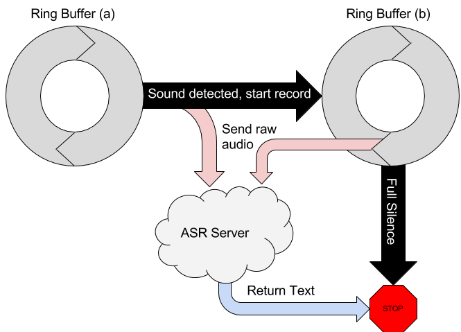
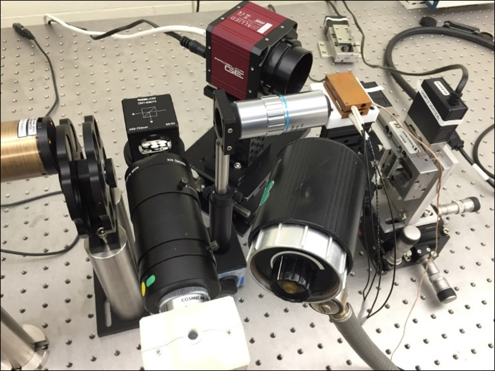
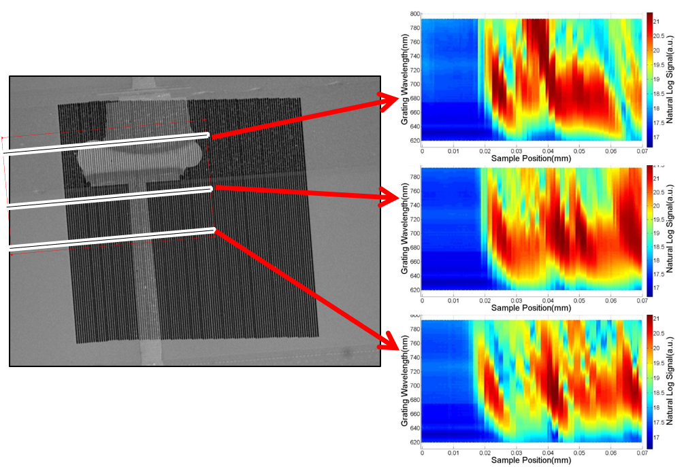

Speech Signal Analysis (2017 —)
Ongoing research work for my honors thesis, exploring measures of nasality in speech to gauge degree of muscular control based on prevalence of phonemes. I'm building a statistical model to leverage these features.
Autonomous Vehicles (2017 —)
Ongoing research work as a part of my capstone project for the BSE in Electrical Engineering. Developing a collection apparatus for a self-driving car dataset using the LeddarTech M16, RPLidar, GPS, and Camera information collected on roads in and around Tempe, AZ. We are using this dataset to train a sensor fusion vehicle recognition model.
REU funded by the NSF Center for Efficient Vehicles and Sustainable Transportation Systems.
Chatbot Dialogue Management System (2016)
In my time at the Social Robotics Lab at the National University of Singapore, I was tasked with creating a self-modifying chatbot system for use in service social robot applications.
I evaluated a dialogue management system designed by the Singaporean Agency for Science, Technology and Research (A*STAR) and built a chatbot in Python running on a modified version of AIML that I created and a few simple audio signal management functions to allow for an Alexa-like wake word system and spoken commands in concert with an A*STAR-built speech recongition service.
My end of term paper for the project.
Strain Measurement System (2014 — 2016)
During my time in the Nanoelectronics and Integration Lab at ASU with Dr. Hongbin Yu I produced control software for a laser diffraction-based semiconductor thermal strain measurement system, documentation for the control system and modification guides for the graduate students to make their own changes.
I made LabVIEW code to control two linear stages holding a sample to be measured and two cameras connected to an attached computer. A diffraction grating was deposited on the samples which, when under the laser point would generate a diffraction pattern at an angle related to the wavelength of the grating pattern. The cameras would capture this angle and the system would report the corresponding grating pitch at that spot on the chip. By scanning the laser across the sample using the linear stages a precise deformation map was generated, allowing for cutting-edge strain measurement.
FURI grant-funded, conference published.
T. Houghton, M. Saxon, Z. Song, H. Nyugen, H. Jiang and H. Yu, "2D Grating Pitch Mapping of a through Silicon Via (TSV) and Solder Ball Interconnect Region Using Laser Diffraction: IEEE Electronic Components and Technology Conference, 2016," 2016 IEEE 66th Electronic Components and Technology Conference (ECTC), Las Vegas, NV, 2016, pp. 2222-2227.